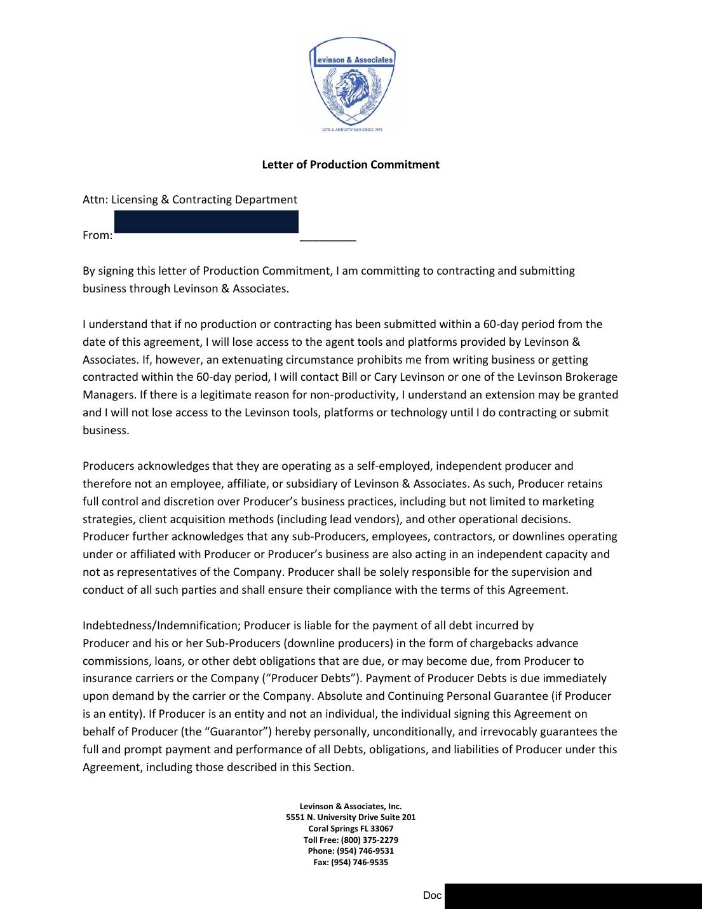
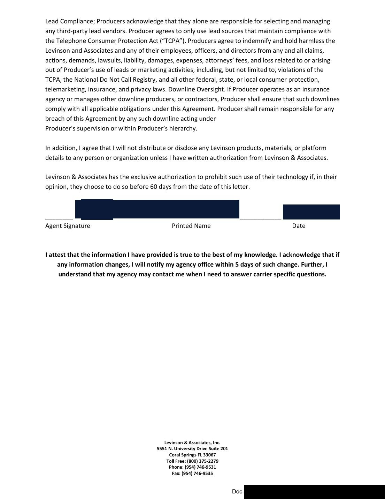
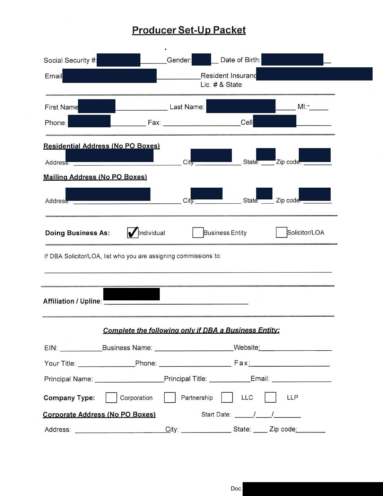
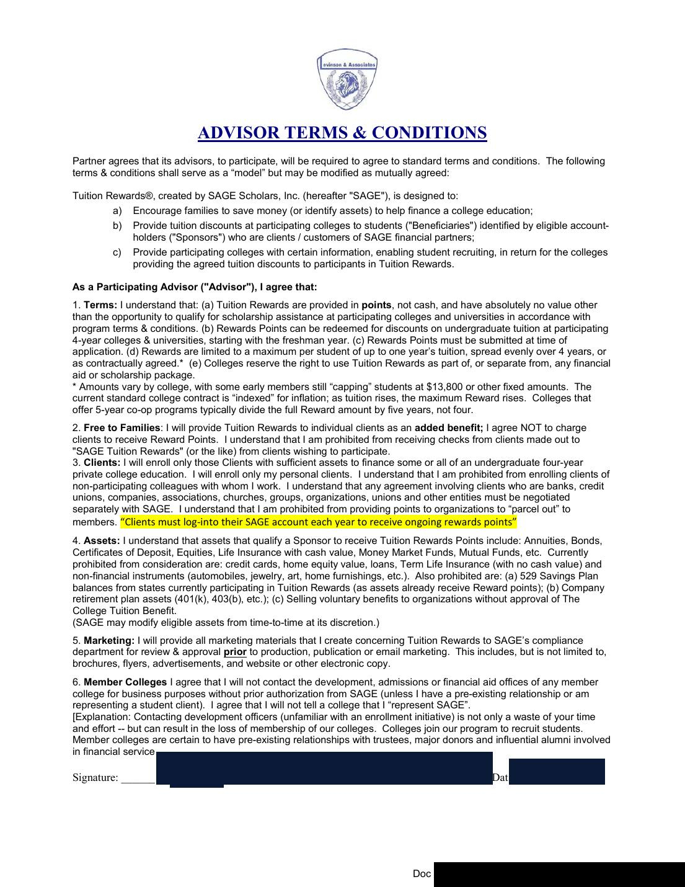
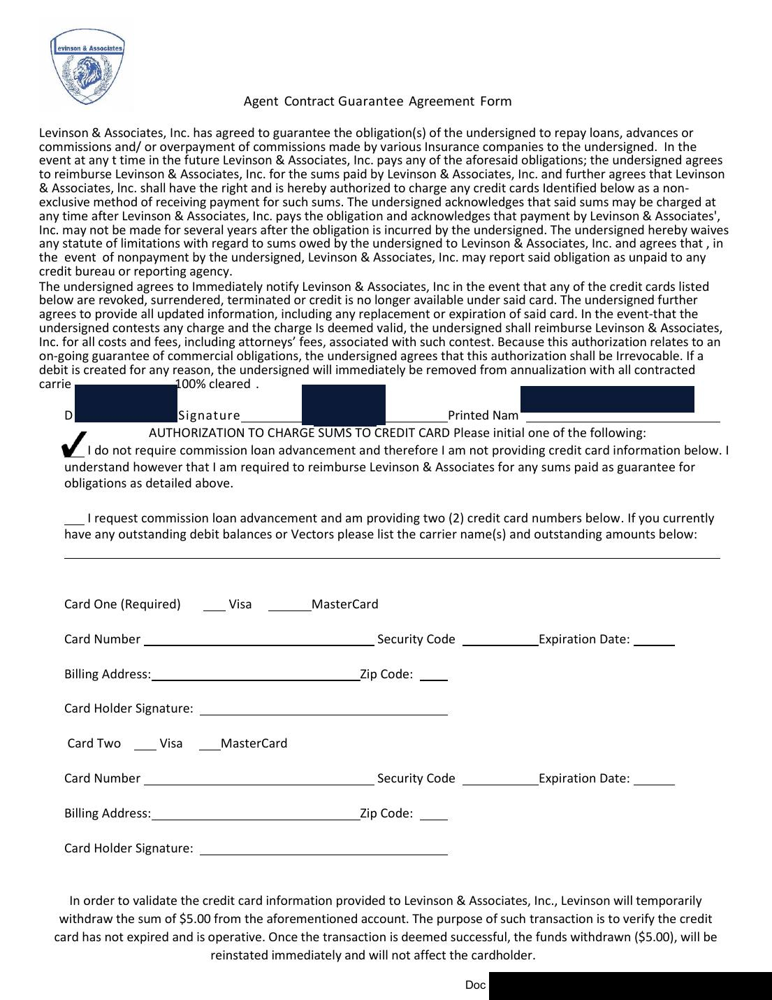
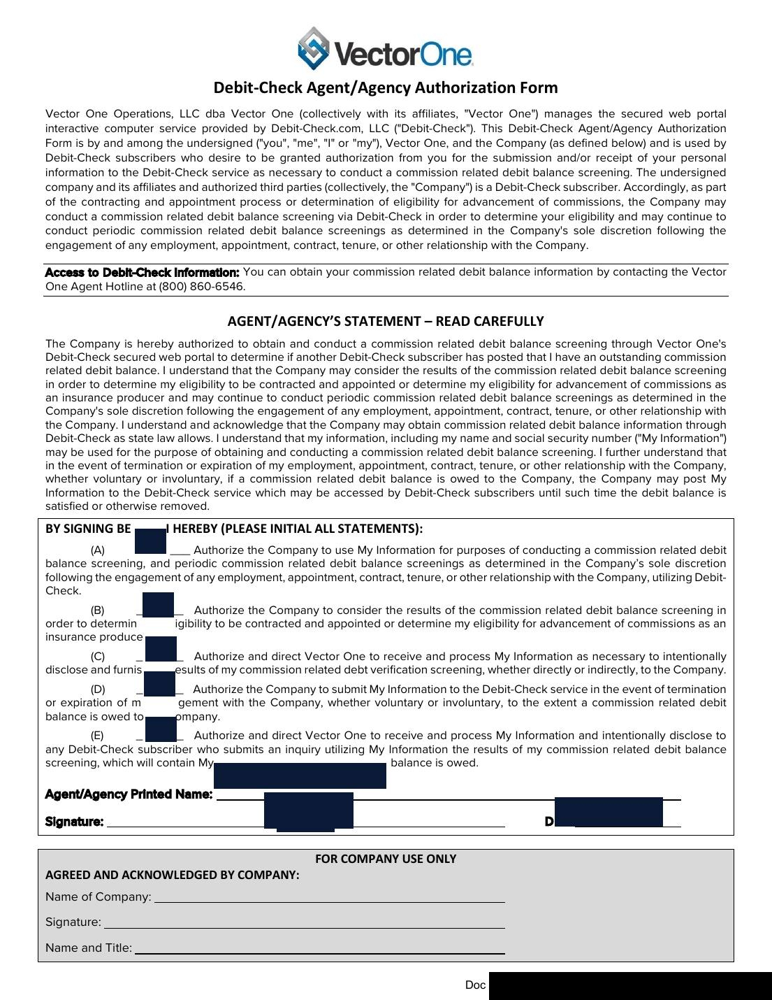

Passo 2 · Letter of Production Commitment (Levinson)
Modelo do pacote de cadastro da Levinson & Associates (6 páginas): carta de compromisso de produção, Producer Set-Up Packet, Advisor Terms & Conditions, Agent Contract Guarantee e autorização Debit-Check (VectorOne). Os dados pessoais do exemplo foram ocultados. Você recebe a sua versão para assinar eletronicamente.





